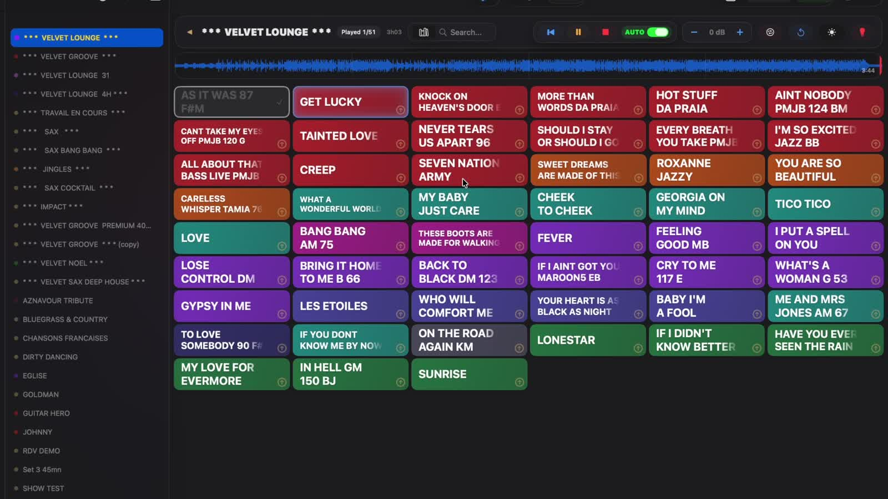
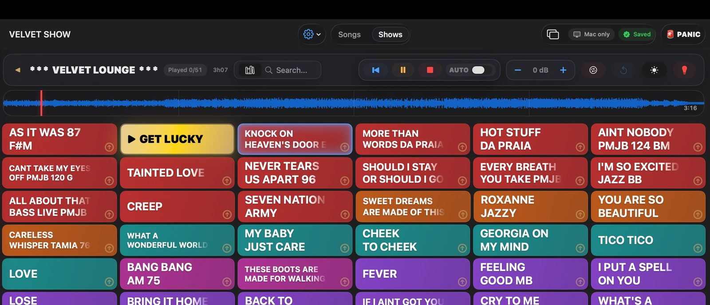
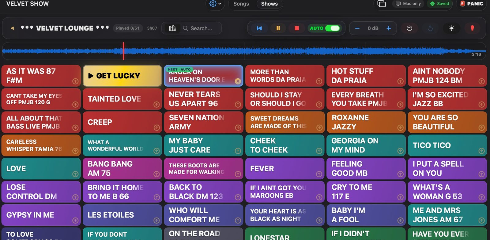

macOS · v1.0
Gérez vos morceaux, paroles, mémos de scène et cues MIDI depuis une seule app Mac — conçue pour la scène, pas pour le tableur.

Contrôlez tout votre spectacle depuis un seul écran.
Morceaux. Paroles. Mémos. Cues MIDI. Un Mac. Une fenêtre. Un spectacle.
Morceaux & Shows
Importez vos morceaux et backtracks, regroupez-les en shows, et arrangez votre setlist par glisser-déposer. Les couleurs par catégorie rendent la lecture d'une setlist de 50 morceaux instantanée depuis la scène — lancez le suivant d'une seule touche.


Mémos & Paroles
Paroles, accords, rappels et indications de scène sont synchronisés sur la waveform et s'affichent automatiquement pendant la lecture. Fini les post-its sur le moniteur, fini le PDF à faire défiler en plein concert.
Cues MIDI automatiques
Placez des cues MIDI n'importe où dans un morceau et Velvet Show les déclenche automatiquement à la lecture — changement de scène, blackout, démarrage d'une boucle vidéo sans toucher à un second contrôleur.
Compatible avec
▶ Knock On Heaven's Door E
Écran de scène
Envoyez paroles, accords et mémos sur un iPad, un second moniteur ou un écran au fond de la scène. Grande police, fort contraste, zéro distraction — lisible depuis l'autre bout de la salle sous n'importe quel éclairage.
Mode Panique
Une corde casse, un câble lâche, la salle a besoin d'un moment — appuyez sur PANIC. L'écran de scène bascule instantanément sur un affichage neutre, l'audio s'arrête et le spectacle marque une pause propre jusqu'à ce que vous soyez prêt.
⌥ + ⌘ + P — une seule touche, accessible dans le noir.
Transitions fluides
Choisissez comment un morceau enchaîne sur le suivant — fondu, fondu lent ou crossfade filtré — et Velvet Show gère le timing. Conçu pour les moments où l'énergie de la salle doit changer sans que personne ne perçoive la jointure.
Current: "Get Lucky"
Next: "Knock on heaven's door E"
Application compagnon · iPhone & iPad
Une application compagnon gratuite pour iPhone et iPad. Connexion en Wi-Fi ou câble USB — sans appairage, sans adresse IP. Velvet Show est découvert automatiquement sur votre réseau local.
iPad — Prompter & Timeline
iPhone — Queue & Remote
Bientôt sur l'App Store
Laissez votre email ci-dessous pour être notifié quand Velvet Remote sera disponible.
Conçu pour les musiciens live
Gérez backtracks, paroles et cues lumière sans assistance.
Partagez une setlist, un écran de scène et une source unique pour tout le spectacle.
Passez de la cérémonie au cocktail à la piste de danse avec des transitions automatiques.
Synchronisez les cues MIDI avec lumières et vidéo comme dans QLab — sans le matériel.
Vous venez de ShowBuddy, Stage Traxx, BandHelper ou d'un workflow QLab ? Velvet Show garde ce qui fonctionnait et supprime ce qui ne fonctionnait pas.
Pricing
Pas d'abonnement. Pas de compte. Essayez gratuitement 30 jours — achetez seulement si ça marche pour votre spectacle.
Paiement par email en attendant la boutique en ligne. Vous recevrez une clé de licence sous 24h.
Comparatif
† ShowBuddy Setlist (119 $) + ShowBuddy Active (199 $ min.) requis pour MIDI/lumières — sans télécommande iPhone/iPad. Prix vérifiés juin 2026 sur dmxis.com.
Roadmap
Velvet Show est en développement actif. Les premiers utilisateurs influencent la roadmap.
Envoyez des messages OSC à n'importe quel logiciel compatible — lumières, vidéo, show control.
Déclenchez Suivant et Play/Pause en mains libres depuis une pédale Bluetooth — sans câble, sans toucher le Mac.
Connectez plusieurs iPhone et iPad simultanément — tout le groupe sur le même spectacle.
Synchronisez setlists et mémos entre plusieurs Mac. Ne perdez plus jamais une configuration de spectacle.
Intégration approfondie avec ShowBuddy — importez mémos, cues et métadonnées automatiquement.